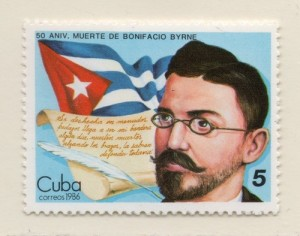

Cira Romero • La Habana, Cuba.

Per il 155 años del nacimiento de Bonifacio Byrne y a los 80 de su deceso, es justo que los cubanos lo sigamos enalteciendo como el autor de ese poema ya inmortal que es “Mi bandera”, conocido, aunque sea solo alguna estrofa, por casi todos los cubanos, y recordado, hace ya más de 50 anni, por Camilo Cienfuegos en medio de una multitud enardecida, donde los versos que lo componen provocaron un verdadero impacto.Nombrado también como “el poeta de la guerra”, como lo bautizara otro escritor, el dominicano asentado en Cuba Nicolás Heredia, al prologar su poemario Lira y espada, el matancero Byrne tiene otras facetas dignas de merecerlo como hombre público, amén de su obra lírica, único género que cultivó con verdadera fruición con otros títulos además del antes mencionado: Excéntricas (1893), Efigies. Sonetos patrióticos (1897), Poesie (1903) e En medio del camino (1914) en los cuales exhibe, en el primero, su desvelo por la naturaleza humana, y en el segundo su sentimiento patriótico, que permeará casi toda su producción y donde resplandecen poemas como “El sueño del esclavo”, donde refulgen versos como estos que transcribo:
¡Ora durmiendo está! ¡Tened cuidado
los que cruzáis de prisa por su lado!
Ninguna voz en su presencia vibre!
Dejad que el triste de dormir acabe,
y no despertéis, porque ¡quién sabe si ese
esclavo
si ese esclavo infeliz, sueña que es libre!
Bonifacio Byrne, desde su adolescencia, sintió inclinaciones literarias y en su ciudad natal, que fuera cuna de tertulias literarias famosas, como la de Domingo del Monte, en la década del 30 del siglo XIX, frecuentó la conocida como Círculo Literario. In 1890 fundó dos periódicos políticos: La Mañana e La Juventud Liberal, y en 1896 debió emigrar a EE.UU. por razones de carácter político. En el exilio desempeñó labores separatistas y fundó, en Tampa, el Club Revolucionario, del cual fue secretario.
El matancero Byrne tiene otras facetas dignas de merecerlo como hombre público, amén de su obra lírica, único género que cultivó con verdadera fruición.Durante su estancia en esta ciudad del oeste floridano laboró en uno de los oficios más entrañables asociados al tabaco: lector de tabaquerías, y desde esa tribuna, además de las lecturas correspondientes, desarrolló una amplia campaña proselitista a favor de la independencia cubana, para la cual contaba con un público eminentemente cubano, los tabaqueros, que amorosamente torcían las hojas, hombres y mujeres que, como él, reclamaban la libertad de Cuba y a ella contribuían aportando centavo a centavo. También colaboró en Patria, el periódico que José Martí había fundado en 1892, in El Porvenir e El Expedicionario. Al cesar el gobierno español regresó a Matanzas y se desempeñó como secretario del Gobierno Provincial de esa ciudad y de la Superintendencia Provincial de Escuelas.
In 1909 fundó y dirigió el periódico Yucayo, único que, según su biógrafo Urbano Martínez Carmenate, autor de Byrne, el verso de la patria (2012), “respondió total y verdaderamente a Bonifacio Byrne […] Ahora sería muy diferente: esta vez Bonifacio Byrne era director y propietario, toda la responsabilidad de aquellas páginas le pertenecía”. En el editorial del primer número, aunque anónimo, se siente su voz:
Abogaremos por la agricultura, la industria y el comercio, por la difusión de la enseñanza, por la prosperidad del elemento obrero, por el crédito de nuestra personalidad nacional, por la moralidad de nuestras costumbres y por todo aquello que redunde en bien y prestigio de las instituciones cubanas.
Colaboró en otras publicaciones como La Primavera, El Ateneo, donde participó en una curiosa aventura: colaborar con un capítulo en una novela colectiva, Flor del valle, donde también se involucraron, tra gli altri, Domingo Figarola Caneda y Catalina Rodríguez de Morales, tra gli altri; Diario de Matanzas, El Estudiante, donde anunció, hacia, 1905, tener una novela en preparación, y los habaneros Figaro e La Discusión. In 1915 la ciudad de Matanzas lo declaró Hijo Eminente y ese mismo año se trasladó a Nueva York para reponer su quebrantada salud, viaje que pudo realizar gracias a una ley promulgada que le concedió una cantidad de dinero para poder enfrentar los gastos.
Al regreso, su naturaleza poética volvió a reclamarlo y obtuvo galardones en los Juegos Florales de Sancti Spíritus (1916) y Matanzas (1934) y fue miembro fundador del Grupo Índice, constituido en su ciudad natal en marzo de 1935 y que persiguió crear una institución cultural que propiciara el amor a las bellas artes, la ciencia y la literatura a través de conciertos y recitales. Organizaron también un cuadro de comedias, una escuela de declamación y una orquesta, además de una revista: Anales del Grupo Índice, que recogió a través de varias actas las conferencias pronunciadas entre 1935 e 1936 y reprodujo muchos de los poemas leídos y dio cuenta también de la vida institucional. A todas esas actividades Byrne le dio su decidido apoyo.
Asimismo, fue socio correspondiente de la Academia Nacional de Artes y Letras y, algo poco divulgado, cultivó el teatro con piezas como El anónimo e Varón en puerta, di 1905, El legado (1908), Matanzas en 1920; o, El espíritu de Martí (1908) e Rayo de sol (1911). Varón en puerta se representó en el mismo año en que fue publicada. Al día siguiente de la función, como lo señala Urbano Martínez Carmenate en su citada obra, la prensa dio noticias del acontecimiento. Las crónicas, refiere, “destacó que era este su primer triunfo como dramaturgo, pero que ese laurel presagiaba otros venideros”. Lo publicado, según Martínez Carmenate, refleja que “los mayores halagos fueron para la actuación, la cual —evidentemente— tuvo calidad”, que estuvo a cargo de Enrique Recio, quien supo vencer todas las dificultades. Texto, al decir del propio estudioso, “más literario que dramatúrgico”, se reciente por “el facilismo de la rima y la endeblez argumental”.
Byrne “deja atrás todo rezago melodramático y construye una obra de singular estatura por su proyección ideológica”. Apenas un mes después de este estreno, la compañía de Evangelina Adams representó El anónimo, que cosechó grandes éxitos en su momento, pero el propio biógrafo reconoce que “la pieza es una entrega teatral sin gloria y con pena” debido, soprattutto, a la endeblez de los personajes. En julio de 1908, seis meses después de subir a las tablas del cienfueguero Terry por la compañía de Luisa Martínez Casado, se representó en el Sauto matancero su drama El legado, que según el periódico El Moderado resultó obra “de una excelente factura y aunque tiene algunos monólogos y parlamentos largos, son tan bellos por sus exquisitos versos, que esmaltan la obra y dejan en el espectador una impresión agradable y simpática”. Tuttavia, como reconoce Martínez Carmenate, “no pasa de ser un simple melodrama con argumento trillado”. Tampoco quedó sin subir a escena, de nuevo por la compañía de la Martínez Casado, Matanzas en 1920; o El espíritu de Martí, dove, vuelvo al citado estudioso, Byrne “deja atrás todo rezago melodramático y construye una obra de singular estatura por su proyección ideológica”. Así lo reflejó El Moderado della 15 Agosto di 1908:
En las situaciones tristes, en que el autor se lamenta de la situación a que ha llegado la República por los errores de sus hijos, sus versos elegiacos conmueven haciendo latir el corazón a impulsos de patrióticos sentimientos. Cuando evoca los espíritus inmortales de Agramonte, Céspedes, Gomez, Maceo y Martí, en que la musa del poeta toca todos los resortes […] del amor a la Patria, el espectador […] siente con el poeta las tristezas.
Refiere Martínez Carmenate que al final del segundo acto, cuando la bandera cubana se extiende por el escenario, la voz de Martí, interpretada por uno de los actores, dice impetuosa:
¡Conservad mi reliquia! ¡Mi bandera!
que el abatido espíritu reanima.
Desde la azul esfera,
la miro cual profusa cabellera,
flotar al aire en la empinada cima!
Si una mano extranjera
la llegase a ultrajar ¡que en una hoguera
calcinada esa mano se suprima!
¡Si no se sabe defender, que muera
el pueblo débil que su honor no estima!
La vida pública de Bonifacio Byrne fue intensa y extensa. Si bien su fama de poeta se extendía por toda la Isla, e incluso traspasaba nuestras fronteras, sin que por ello tuviera que abandonar su Matanzas natal, él, pudiendo brillar aún más, según recuerda Marco Antonio Dolz,
se ha resignado a vivir una vida apacible, tranquila y casi retirada, en su amada ciudad de Matanzas, cuidad poética por excelencia […] Allí ha construido […] y se ha encerrado en ella, su torre de marfil; allí se ha creado su ambiente especial de belleza que quizás no hubiera podido crearse en una capital agitada y allí ha fundado, bajo los auspicios de la virtud y el amor, un hogar modelo que es templo de poesía.
Una ley emitida por el Congreso de la República de Cuba en julio de 1920, además de otorgarle una pensión vitalicia, lo reconoció como Poeta Nacional, obtenido gracias a sus versos patrióticos. Sin que desmereciera tal lauro, son total justicia las palabras de Martínez Carmenate al referir que
… después de 1902, Bonifacio Byrne —quizás sin proponérselo, sin pretenderlo— va convirtiéndose en una especie de cronista patriótico. Se le invita a todos los festejos de evocación histórica, le canta a los héroes y a los sucesos relevantes en consonancia con las efemérides gloriosas. Prodigar sus versos en esas ocasiones fue haciéndose deber, comprometimiento inevitable; y él regalaba sus estrofas casi siempre con la premura y depreciación que conlleva el arte por encargo, a veces ausente de valores poéticos y solo plausible por la carga optimista, de reverencia al heroísmo invicto del pasado nacional.
A comienzos de 1936 su vida se apagaba lentamente, pero continuaba escribiendo poemas. Finalmente, il 5 de julio de ese año murió. Al día siguiente, durante su sepelio, la ciudad de Matanzas se paralizó: todos marcharon al cementerio a darle el definitivo adiós, a pesar de que en su poema “Epílogo” había dicho en una de sus estrofas de claro sabor martiano:
No quiero, cuando me muera,
ni coronas, ni gentío:
flores nada más quisiera
en mi féretro sombrío,
y que mi cruz de madera
no brille más que el rocío.
Si “Mi bandera” será siempre el poema mayor de Bonifacio Byrne y como poeta habrá que recordarlo por esta insigne composición, convengamos en que otras aristas también brillaron en esta personalidad que siempre estuvo acompañada de “patriótico sigilo”.